Альт Линукс: Основные настройки
Безумие Морского Котика 🐱
Введение
Документация по автоматизации развертывания и обслуживания Альт Линукс СП Рабочая станция. Все команды протестированы на стабильной ветке c10f2.
Система ALT SP Workstation 11100-01 на дату 22.04.2026 имеет версию ядра:
6.12.74-6.12-alt0.c10f.2
Дистрибутивы
Все необходимые `.iso`, `.rpm` и архивы собраны в отдельной директории dist на Яндекс Диске.
📁 Скачать distУстановка Альт СП 10 Рабочая станция
Установка
Выберите: Установить ALT SP Workstation
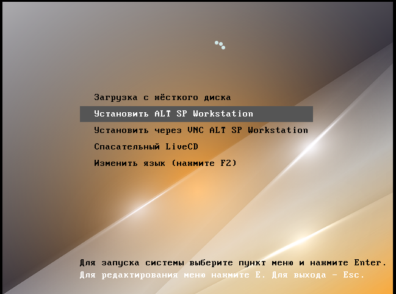
Выберите профиль: Вручную
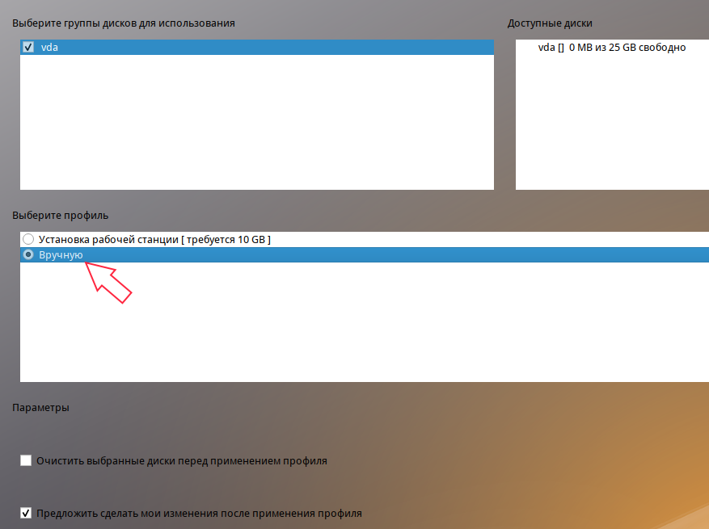
Удалите старые разделы
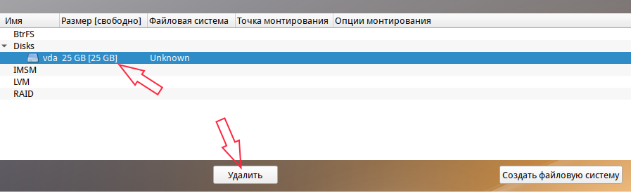
Создание раздела для микропрограммы UEFI
При установке в режиме UEFI обязательно создайте раздел EFI размером 512 МБ, файловая система FAT32, точка монтирования /boot/efi. В противном случае система не загрузится. Если используется режим Legacy(BIOS), то создавать EFI-раздел не нужно. Чтобы понять какая микропрограмма стоит достаточно раскрыть список "Тип раздела" при создании раздела, если в списке есть "efi system partition", значит UEFI, если только "FAT32", значит Legacy(BIOS).
1. Создание раздела efi
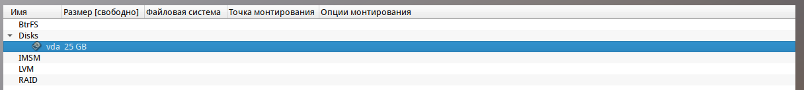
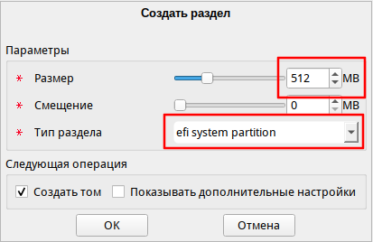
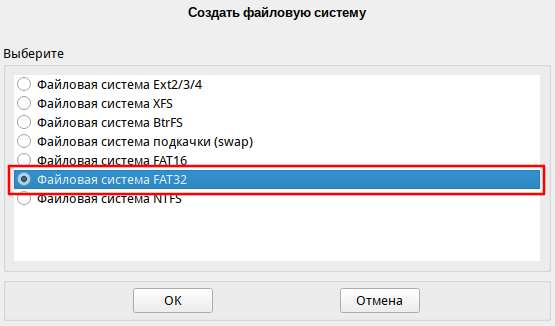
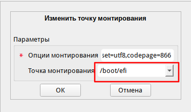
2. Создание раздела swap
Обязательно создайте раздел для Swap (подкачка) хотя бы 8Гб. В некоторых ситуациях отсутствие swap может привести к "тормозам", даже если ОЗУ свободно.
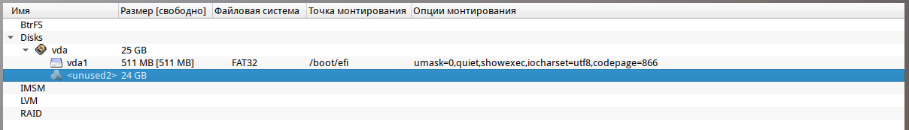
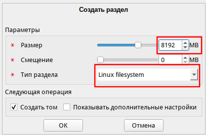
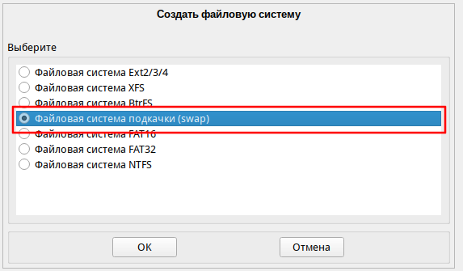
3. Создание основного раздела /
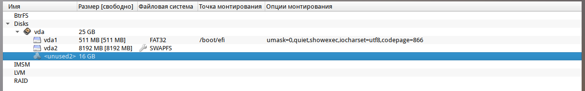
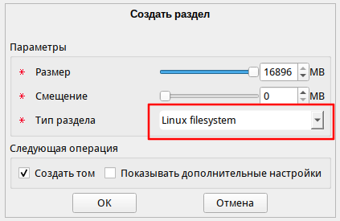
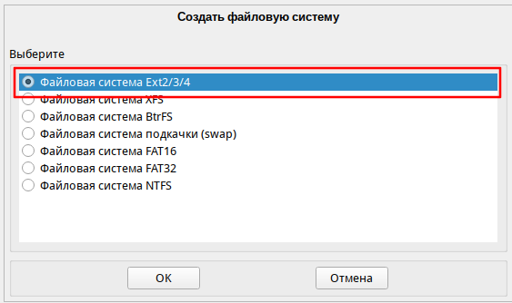
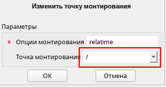
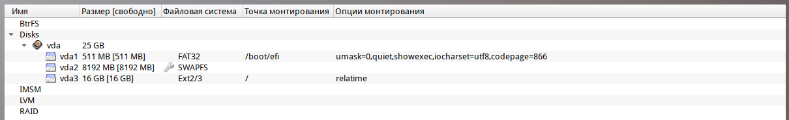
Создание разделов для микропрограммы Legacy(BIOS)
1. Создание раздела swap
Обязательно создайте раздел для Swap (подкачка) хотя бы 8Гб. В некоторых ситуациях отсутствие swap может привести к "тормозам", даже если ОЗУ свободно.
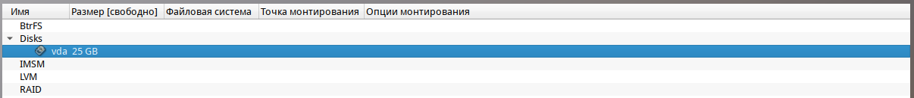
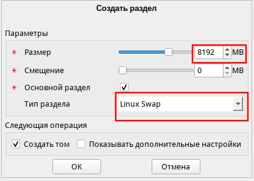
2. Создание основного раздела /
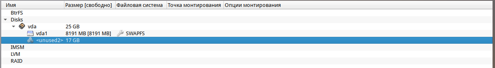
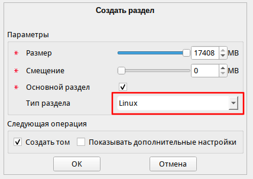
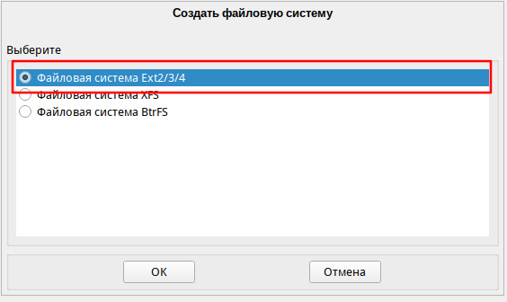
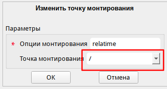
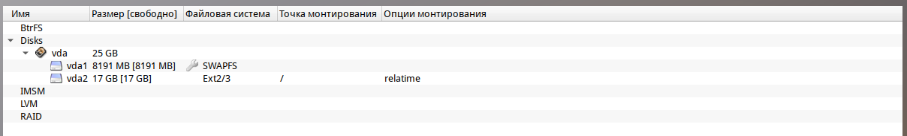
Далее. Загрузитесь с жесткого диска.
После загрузки с жесткого диска.
Снять галочку "Установить или сбросить пароль"
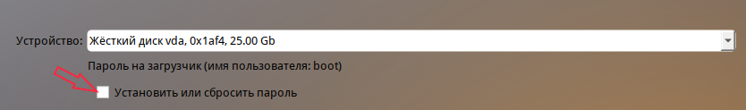
Настройте сеть
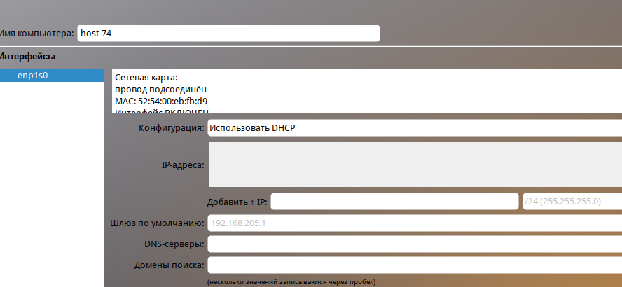
Задайте пароль root
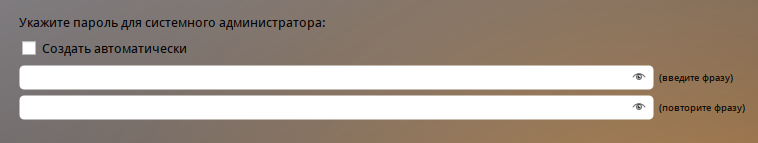
Создайте учетную запись пользователя
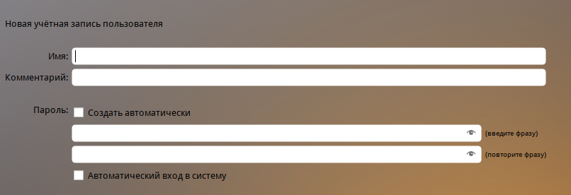
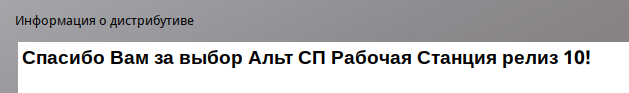
После установки
Удалить атрибут noexec в /etc/fstab с /tmp и /home
Если раздел /home отдельно не создавался при разметке диска, то его и не будет в fstab
В редакторе vim для входа в режим ввода нажмите: a или i или o
a - ввод после курсора; i - ввод до курсора; o - ввод с новой строки
Для сохранения и выхода войдите в режим команды нажав Esc затем наберите: :wq
Затем нажмите Enter
Для СП фиксация для исключения деградации
Управление пользователями
Обновление Альт СП релиз 10 до версии 10.2
Автоматическое обновление
Для простоты обновления был написан bash скрипт update-kernel_10.2.sh. Данный скрипт выполняет все действия, которые описаны в нижестоящих главах, а именно: переход на ветку c10f2, обновление ядра и проверка с фиксацией. Путь до скрипта: distr/update_kernel/update_kernel_10.2.sh
Если скрипт выполнился успешно, то никаких других действий по переходу выполнения не надо.
Актуализация текущей пакетной базы
Закомментировать диск с установщиком Альта в fstab, иначе без установщика диска будет ошибка при обновлении дистрибутивов
Закомментировать диск с установщиком Альта в source.list
Раскомментировать репозитории. Раскомментировать/добавить три строчки. Если почему-то репозитории по http подвисают, то использовать по ftp
Выполните обновление системы
Если файловая система защищена от изменений механизмом IMA/EVM, отключите его. Для этого запустите от имени root команду integrity-remover, после чего система будет перезагружена.
Обновление до версии 10.2
Переключите бранч на 10.2
Снова внесите изменения в файл /etc/apt/sources.list.d/altsp.list и другие источники APT. Добавить c10f2
Чтобы проверить, используется ли integalert используйте команду: systemctl is-enabled integalert
При наличии каталога /etc/osec, переместите куда-нибудь файлы настройки старого сканера проверки целостности на основе OSEC (используется утилитой integalert)
Обновите индексы для нового источника и систему, затем обновите ядро и перезагрузитесь. Убедиться, что ядро обновилось выполнив uname -r до update-kernel и после reboot
Если в процессе выполнения первых трёх команд возникнут сообщения про несовпадение размера пакета или контрольных сумм, повторите команды, начиная с apt-get update.
update-kernel ищет обновление только к конкретной версии ядра. Если вышла другая серия, к примеру, стоит un-def, а вышла std-def (просто kernel-image), то в update-kernel надо указывать конкретное ядро.
Проверить можно командой: update-kernel -l
Должно быть: * (36 d) kernel-image-6.12-6.12.74-alt0.c10f.2 [default]
Следующий пункт выполнять только если ядро не обновилось из-за разных серий (un-def, std-def – просто kernel-image)
После перезагрузки
Зафиксируйте новое состояние системы для корректной работы сканера проверки целостности на основе OSEC, если он использовался ранее и при перезагрузке компьютера выводилось сообщение о возможном нарушении целостности
Внимание! Если перед обновлением файловая система была защищена от изменений механизмом IMA/EVM, включите его обратно при помощи утилиты integrity-applier
После обновления ядра перестает работать virtualbox, т.к. под каждое ядро надо пересобирать ядро для виртуальных машин. Проще переустановить виртуальную машину